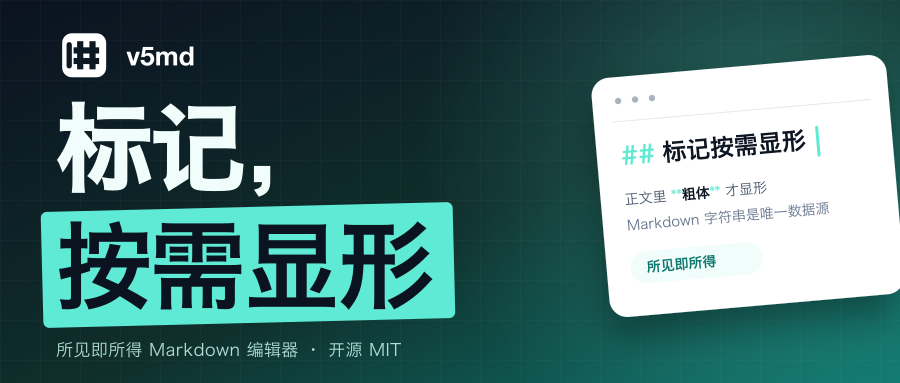

示例标题 · 可在后台替换
你有没有这样写过文档：左边源码、右边预览，改一个标点要来回瞟三眼；写完想发公众号，粘过去样式全丢，只能从头刷一遍；换个编辑器，内容又被收进一套只有它能读的私有格式。
三个毛病，一个根源：内容和呈现被搅在了一起。 v5md 想把这根线重新理清楚。
一句话说，v5md 是一个开源的所见即所得 Markdown 编辑器：Markdown 字符串是唯一数据源，标记只在你需要的时候显形。 MIT 许可，© 2026 zhuyanwei，当前版本 0.0.4（2026-11-12），一共九个 npm 包。
想直接上手，地址先摆在这里：
GitHub：github.com/zyw/v5md
在线 Demo：v5md-demo.v5ai.xin
不方便点链接的话，纯文本在这里：https://github.com/zyw/v5md、https://v5md-demo.v5ai.xin、https://v5md.v5ai.xin。
输入、粘贴、工具条命令，改的都只是那一段字符串，再重新解析、重绘页面。getMarkdown()
给的就是全文，可以直接入库、走 diff、交给别的 Markdown 渲染器。
没有 HTML 模型，没有私有 JSON。你存下来的，就是标准 Markdown。
平时看到的是排好的版式。光标落进标题、粗体、代码块，#、**、围栏才露出来；改完自动收回去。
它没有拿 DOM Range 记选区，而是用字符串偏移
{ anchor, head }，标记节点和原文偏移严格一致——所以显形的时机和位置永远对得上，不会出现「标记画歪一格」。
组合输入期间不重绘 DOM。候选框不会错位，拼音上屏不丢字。
这条听起来基础，但在 contenteditable 上做编辑器，它是最容易翻车的地方之一。
@v5md/vue 和 @v5md/react 只是薄壳，核心是 @v5md/view 里的
Editor 类，也可以 new Editor({ element }) 直接挂到任意 DOM 元素上。
插件能贡献工具条按钮、斜杠菜单项、命令、对外 API，甚至接管围栏代码块的渲染与销毁。官方五个插件（字号、导出、Mermaid、Mindmap、ECharts）都要单独装，编辑器不自带，装哪个用哪个。
copyForWechat() 生成只带内联样式的 HTML 并写进剪贴板；getWechatHtml({ baseUrl })
返回同样的 HTML，顺手把相对图片地址转成绝对地址。
粘到公众号后台，标题、引用、代码块、表格的样式都还在，不用再一段段手刷字号和间距。
普通复制和公众号复制是分开的：所见即所得模式下复制渲染后的内容（不含标记），源码模式下复制完整 Markdown。
导出插件支持 Markdown / HTML / PDF / 图片：PDF 按块边界分页，减少列表项和图表被拦腰截断；HTML 导出会把 ECharts 这类 canvas 快照成图片，克隆后不会变成空白。
图表写在围栏代码里：mermaid 画流程图、mindmap 用一段 Markdown
大纲生成思维导图、echarts 吃一段 JSON
option。它们都只在文档里真的出现时才动态加载；没装对应插件时，围栏按普通代码块高亮，不会报错。
screenshots/03-mermaid.png、screenshots/06-mindmap.png、screenshots/04-echarts.png
任选一到两张放在这段后面。
导出图片和 PDF 时可以用插件选项 imageScale（或
exportImage({ scale })）调截图倍率；需要可选中矢量文字时走
print()，用浏览器「另存为 PDF」。
从网页、Word、飞书复制的富文本，会先转成 Markdown 再写进文档。不用先粘到记事本里洗一遍格式。
这套转换也对外暴露：htmlToMarkdown(html) 可以直接用在别处。
一次编辑的路径很短：输入、粘贴、工具条命令都先改那段 Markdown 字符串（带撤销历史），再交给 micromark / mdast 解析成带偏移的节点树，然后只重绘文档区，并把光标放回对应偏移。
它只重写你实际编辑到的那一段，没碰过的内容原样保留。 不放心的话，可以先用
parse() 校验一遍再写入。
screenshots/05-source-mode.png（源码模式，行号 + 语法高亮）和
screenshots/01-editor-overview.png
拼一张左右对比图。
撤销重做、查找替换（支持正则和全词）、带行号与语法高亮的整篇源码模式、大纲跳转、工具条与大纲钉顶、块级拖拽、表格行列编辑、图片拖拽缩放、KaTeX 公式、YAML frontmatter。
输入 / 打开斜杠菜单，Mod+F 查找、Mod+Shift+S
切源码模式，动作都能落到键盘上。
界面中英双语，locale: 'zh-CN' | 'en'，工具条、斜杠菜单、查找栏、大纲会一起切换。查找高亮用 CSS Custom Highlight
API（::highlight()），浏览器不支持时静默降级，编辑本身照常。
主题是一个独立 CSS 文件，所有选择器以
.v5md
开头，宿主页面的全局样式不会串进编辑器；编辑器外沿不带圆角，塞进任何容器都不打架。
npm install @v5md/view
import { Editor } from '@v5md/view'
import '@v5md/view/theme.css'
const editor = new Editor({
element: document.querySelector('#editor')!,
value: '# 标题\n\n正文',
locale: 'zh-CN',
onChange(markdown) { localStorage.setItem('draft', markdown) },
})
别忘了主题 CSS：不引入 @v5md/view/theme.css，就只有结构没有排版。KaTeX 和 lowlight 随
@v5md/view 一起装好，公式和代码高亮不用再配一遍。
Vue 3 用 V5Editor 加 v-model，React 用 value 和
onChange，装对应的包就行。只想要解析、不要界面，装 @v5md/core——它不依赖
DOM，能在 Node 里跑。
screenshots/01-editor-overview.png，工具条、大纲、正文同框。
能只读展示吗？
editable: false，还是同一个编辑器，公式、图表照常渲染，待办还能勾。
能做 SSR 吗？ 可以 import，但编辑器只在浏览器挂载，首屏建议先渲染占位。
内容会被改坏吗？ 只会重写你编辑到的那一段，其余原样保留。
三个地址，再放一遍：
如果它正好解决了你某个下午的烦躁，去 GitHub 点个 star，或者先到 Demo 里粘一段自己的稿子试试。
这是按公众号常见字号（16px / 1.85 行高）做的排版预览，只用于看节奏和密度。真正发布时以
v5md-公众号文案.md 里的正文为准。
1. 写 Markdown 不用再左右两栏来回瞟：标记只在光标落下时显形，Markdown 字符串是唯一数据源，一键复制成能直接粘进公众号的内联样式 HTML。开源 MIT，Vue 3 / React / 原生都能嵌。
2. v5md 0.0.4 发布：九个 npm 包，所见即所得编辑，中文输入法不重绘 DOM，插件可插拔，导出 PDF 与图片，mermaid、mindmap、echarts 图表按需接入。

标记，按需显形 —— v5md，所见即所得 Markdown 编辑器